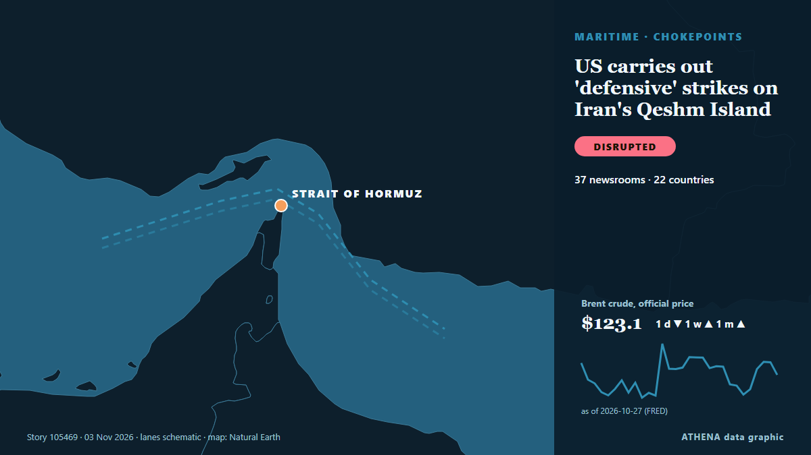

ATHENA Glaux Intelligences — Inteligencia informativa global — cada cifra explicada
Noticias del mundo, contrastadas entre países
ATHENA Glaux sigue cientos de medios de todo el mundo y agrupa sus informaciones en acontecimientos. De cada uno ve cuántos medios de cuántos países lo publicaron, quién fue el primero y una puntuación de riesgo con sus motivos — actualizado cada 15 minutos, en siete idiomas.
En directo de las noticiasUS carries out 'defensive' strikes on Iran's Qeshm Island38 medios · 22 países · Riesgo 6.5 · Fuentes: Arab News, Arab Times

GeopolíticaUS carries out 'defensive' strikes on Iran's Qeshm Island
Several explosions were reported on Iran’s Qeshm Island, according to IRNA, though the cause remains unknown. de Arab News
Los titulares se muestran en inglés, tal como se publicaron.
Israel’s Eisenkot accuses Netanyahu of trying to discredit election results
Former deputy governor tells Central Banking prime minister’s proposals are ‘stupid’ and ‘crazy’ de Central Banking
The top 10 things to watch for in the US midterm elections
And what it could all mean for New Zealand. de RNZ National

Hoy en cifras
| 05:00 | 633 |
|---|---|
| 06:00 | 1738 |
| 07:00 | 1231 |
| 08:00 | 1039 |
| 09:00 | 842 |
| 10:00 | 907 |
| 11:00 | 811 |
| 12:00 | 911 |
| 13:00 | 787 |
| 14:00 | 850 |
| 15:00 | 792 |
| 16:00 | 954 |
| 17:00 | 623 |
| 18:00 | 530 |
| 19:00 | 610 |
| 20:00 | 345 |
| 21:00 | 411 |
| 22:00 | 505 |
| 23:00 | 313 |
| 00:00 | 417 |
| 01:00 | 340 |
| 02:00 | 336 |
| 03:00 | 409 |
| 04:00 | 582 |
Riesgo de los eventos de hoy
US delivery of 500 Patriot missiles to Ukraine will span 3 years starting in 2030
NATO Supreme Allied Commander Europe General Alexus Grynkewich said the United States continues to supply Ukraine with Patriot interceptor missiles, as well as weapons packages paid for by European… de Ukrinform (English)
Urgent: U.S. to host trilateral talks with Russia, Ukraine in Abu Dhabi on Nov. 10-11, says Witkoff
The United States will bring together delegations from Ukraine and Russia in Abu Dhabi on November 10-11 to discuss ending Russia's conflict with Ukraine, post-conflict security agreements and… de CGTN (World)
Netanyahu Pressing Trump To Attack Iran After Midterms: Report
Democratic doctors aim to convert the backlash against the Trump administration’s health policies into midterm votes. de Al Jazeera English
Lo más cubierto
- Geopolítica
Israel’s Eisenkot accuses Netanyahu of trying to discredit election results
51 países · 130 medios
Señales emergentes
- Aumento repentino · Activa ahoraQeshm Island
- Aumento repentino · Activa ahoraBTC
- Aumento repentino · Activa ahoraRBA
- Aumento repentino · Activa ahoraUSD
- Aumento repentino · Activa ahoraStevens
Alertas oficiales
- Red notification for tropical cyclone FOUR-26. Population affected by Category 1 (120 km/h) wind speeds or higher is 1.156 million .Red · GDACS ·
- Cyber chief: UK facing AI-powered attacks on critical infrastructure within two yearsadvisory · UK National Cyber Security Centre ·
- M 6.0 - 165 km NW of Port-Olry, VanuatuM6.0 · USGS ·
- M 6.2 - 43 km ESE of Port-Olry, VanuatuM6.2 · USGS ·
- M 6.0 - 214 km NW of Port-Olry, VanuatuM6.0 · USGS ·
ATHENA en Telegram
Únase gratis al grupo ATHENA Glaux y reciba las noticias en cuanto se publican aquí:
- eventos de última hora con riesgo de 6 o más
- un resumen cada hora de los principales eventos
- actualizaciones de los seguimientos de riesgo
- el informe diario cada mañana a las 10:00 (hora de Atenas)
- una perspectiva semanal
- avisos oficiales, señales emergentes y riesgos al alza
Pulse el botón, se abre Telegram, pulse Unirse. Las publicaciones están en inglés; puede silenciar o salir cuando quiera. ¿Sin Telegram? Es gratis en telegram.org.
Seguimiento de riesgos
Más ›Riesgos globales — semana 45, 2026 (2–8 nov) ›
Geopolítica, política y seguridad
Más ›Israeli strikes kill three people in Gaza, medics say
Israeli strikes killed at least three Palestinians and wounded several others in the Gaza Strip on Monday, the territory’s health officials said. de Cyprus Mail
- Guerras y conflictos
N. Korea tests 'dispersal warhead' for cruise missiles following cluster bomb test
- Elecciones y política
Trump makes final US midterm pitch at troubled Reflecting Pool
- Diplomacia y cumbres
Neighbors are Iran's priority, Araghchi says
- Guerras y conflictos
Russian bomb attacks on aid centre and shelter kill 26, Ukrainian officials say
Economía, finanzas y mercados
Más ›Australia hikes rates to 18-year high to fight inflation
The Reserve Bank of Australia's decision was in line with expectations from economists polled by Reuters, and marked its fifth rate increase this year. de CNBC World
- Empleo y salarios
Disney eyes thousands of layoffs, managers asked to cut 20pct in costs
- Acciones, bonos y mercados
S&P cuts Meta’s outlook to negative
- Acciones, bonos y mercados
Alphabet launches €6B bond sale in first test of AI debt since selloff
- Acciones, bonos y mercados
US stocks recover some of last week's sell-off after oil prices fall sharply
Comercio, industria e infraestructuras
Más ›US to drop South Africa, Rwanda from AGOA duty-free trade initiative
Trade Industry and Competition Minister Parks Tau says South Africa is prepared for any outcome. de SABC News
- Infraestructuras críticas
Poland launches operation along Russian border in response to reports of planned sabotage
- Transporte marítimo y puertos
Indian Navy Rescues 20 Crew Members From Pirated Vessel Azini In 48-Hour Op
- Comercio y acuerdos
Trump to remove Rwanda and South Africa from US trade deal
- Chips e industria estratégica
Greece Unveils 2026–2030 Plan to Build a Semiconductor Industry
Energía, recursos y medio ambiente
Más ›Brazil Factory Prices Jump 4.34% in a Year
Brazil's producer prices rose 4.34% in the year to September and 1.54% in the month, well above forecasts, a warning for inflation and interest rates. de The Rio Times
- Clima extremo y desastres
Heavy rainfall, uprooted trees, power outages: Cyclone Murasu crosses Andhra coast
- Clima y política climática
UN reports warn of large-scale damage to Earth’s ice from climate change
- Petróleo y gas
Oil rises after report of US strike on Iran's Qeshm Island
- Petróleo y gas
Fire breaks out at HPCL refinery in Visakhapatnam, no casualties reported
Tecnología, IA y ciberseguridad
Más ›Hackers hit Ukraine, Russia's emergency apps, send fake nuclear, chemical attack alerts
All-clear messages were sent shortly afterward for each alert, and Ukraine's Ministry for Digital Transformation said the app had been temporarily suspended. de The Jerusalem Post
- Medios y desinformación
Africa: Six in Seven Journalist Murders Go Unpunished, Unesco Reports
- Ciberseguridad
Cyberattacks disrupt supermarket fridges
- Medios y desinformación
South Korean president's passport details leaked online, broadcaster reports
- Chips y computación
South Korea to double spending on AI and chips in 2027
Empresas, compañías e inversión
Más ›New Apple CEO John Ternus chalks up some early wins, but the honeymoon is over
Apple beat earnings expectations Monday, but it’s facing surging memory chip costs and investor questions about its new Siri AI product. de Fortune
- Quiebras y reestructuraciones
Judge blocks Trump administration from pressuring states over non-citizen voting
- Estrategia empresarial
WinGD Grows Korea Engine Production Capacity
- Estrategia empresarial
Sales of Galaxy Z Fold 8 increase following launch of Apple's 1st foldable smartphone
- Estrategia empresarial
Apple FYQ4 Revenue Tops Forecasts On iPhone Sales As New CEO John Ternus Steps Up
Salud, ciencia e investigación
Más ›The moon, Mars, and Jupiter shine in the heart of the Lion overnight on Nov. 1-2
The waning moon shines with Jupiter, Mars and the brilliant star Regulus in the eastern sky overnight Nov. de Space.com
- Brotes y salud pública
Washington state resident dies from bird flu following exposure to infected cattle
- Descubrimientos científicos
Evidence of red bloods cells found in 115 115 million-year-old dinosaur’s bones
- Sistemas de salud
Ethiopia attacks kill civilians as health system nears collapse, WHO chief says
- Brotes y salud pública
Ebola outbreak kills more than 5,300 people in DR Congo
Sociedad, derecho y políticas públicas
Más ›Melbourne Cup 2026 finishing order from first to last
Race favourite Point Of Law runs down Royal Supremacy to lead a trifecta for trainer Ciaron Maher in the 2026 Melbourne Cup. de ABC News Australia
- Accidentes y emergencias
On Camera, 2 Helicopters Collide In Nepal While Landing, 1 Killed
- Accidentes y emergencias
20-year-old co-pilot among nine killed in Florida business jet crash
- Tribunales y justicia
US Supreme Court rejects bid by Trump administration to set aside 20,000 California ballots
- Accidentes y emergencias
Plane may have broken apart ahead of deadly Florida jet crash, say investigators
Deportes
Más ›"Not the time for Russia to return" — Finnish politicians condemn sports court ruling
The Court of Arbitration for Sport (CAS) ruled last week that Russian teams can return to ice hockey’s international tournaments. de Yle News (alternative feed)
- Fórmula 1 y motor
Antonelli becomes F1's youngest-ever champ, Italy's first in 73 years
- Juegos Olímpicos y más
Gabby Williams leads Valkyries to WNBA championship in second season, beating Dream 68-63 in Game 7
- Fútbol
Kane would swap Ballon d'Or for Champions League victory
- Fútbol
FIFA to grant access to documents from scrapped World Cup sell-off plan